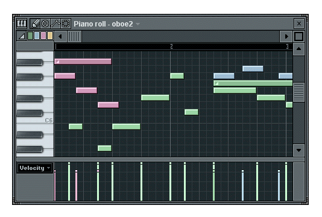
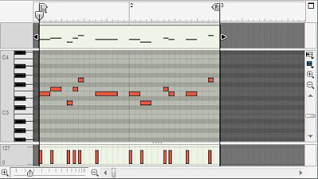
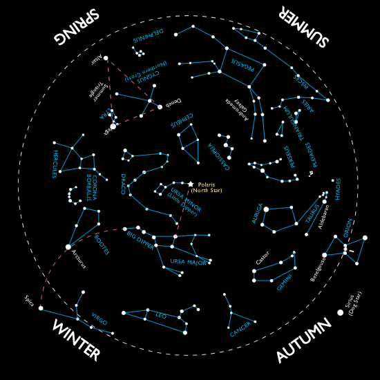
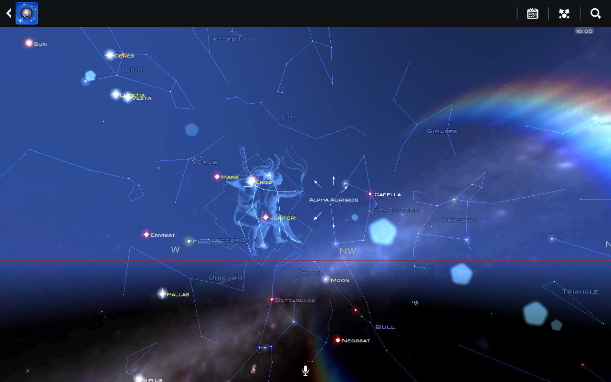

The idea behind this project would be to take my experience developing gui's and my working knowledge of digital audio workstation software, such as my personal favorite, Propellorhead Reason, and others such as Fruity Loops, Logic, GarageBand, and Ableton. All of these programs have a few things in common that make are the foundation of all DAW's: A mixer full of available audio channels, which in turn are hooked up to units that produce or alter sound, and lastly some sort of piano-roll/midi note editor. Midi notes are a type of audio programming that allows for a computer to generate a sound (whether from a file or through a synthesizer) whenever a "MIDI note" is seen at a certain position in time. It is effectively simplified digital sheet music represented on a piano-roll. I would start this project by developing this piano roll GUI, adding in functionality to create, delete, resize, move, cut and splice the notes themselves, then hook them up to actual audio.
 My personal website at the moment is very lacking, I have been failing at keeping up on updating it over the last year and a half. However, my personal skills, abilities, experiences and creations have amassed, and need to be accurately represented. This project would involve thinking out a flexible, immersive and dynamic GUI for my personal site that would represent myself better than ever. It would involve many components and pages for my personal projects, such as coding, music, digital and traditional art, photography, links to existing projects/demos, a bio, contact information and of course the experience itself would aim to be novel and unique but likewise flexibile and usable.
This idea is more of a shot in the dark (no pun intended). I would put my skills to use to develop something educational and fun. Essentially a revamp of google sky maps/ star maps, it would take your position on the earth and view the celestial sky above your head, except unlike google's version, this version would allow the user to interact with the sky and its contents. I would need to find data online that I could import dynamically. Data on constellations and basic visible stars/nearby planets would be necessary at minimum. I would find this tool an exciting prospect for developing a truly rich and interactive GUI; it has potential for an actual unique method of use.
 {kind=link}
{kind=link}
{kind=link}
{kind=link}